All three approaches from the Hallmark dossier, now at equal fidelity: five screens each, one consistent sample afternoon, identical viewport and renderer. Click any direction's interactive mock to drive it live (keys 1–5 switch screens, Space pauses the timer).
Nocturnal machined instrument — refractive glass controls, tactile panels, amber signal. Quiet identity; maps cleanly to SwiftUI/Metal. Known risk: visual density (Restraint 3/5).
Open interactive mock →Warm dusk-light; an abstract breathing field is the visual centre and changes with state. Most emotionally supportive. Known risk: continuous motion can distract; heaviest Reduce-Motion burden.
Open interactive mock →Cyan/steel control room — day ledger, calendar, automations at the rim; dock sleeps until a block starts. Power-user legibility. Known risk: density raises activation energy.
Open interactive mock →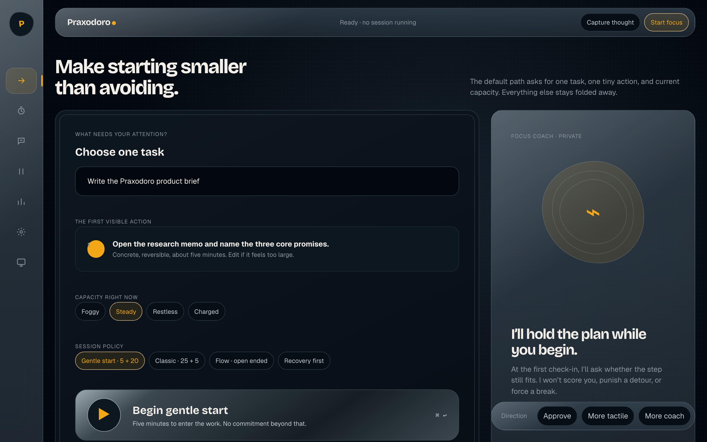
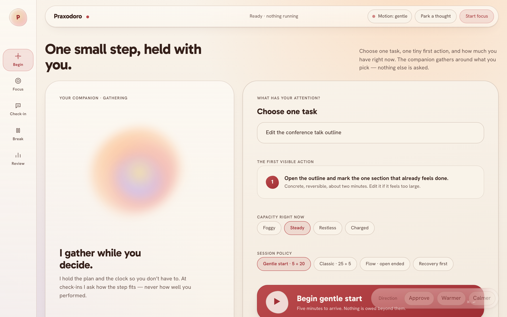
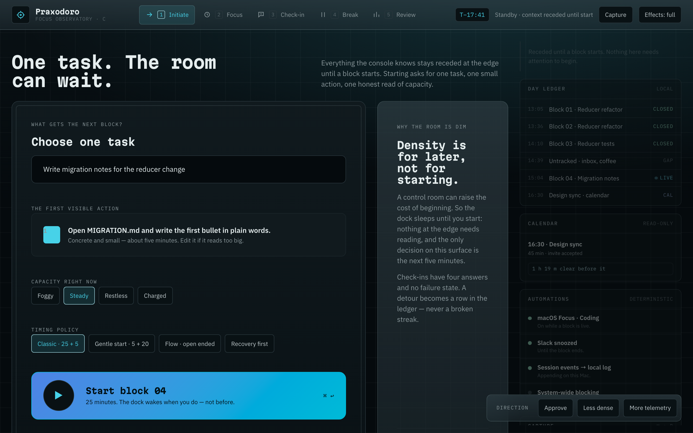
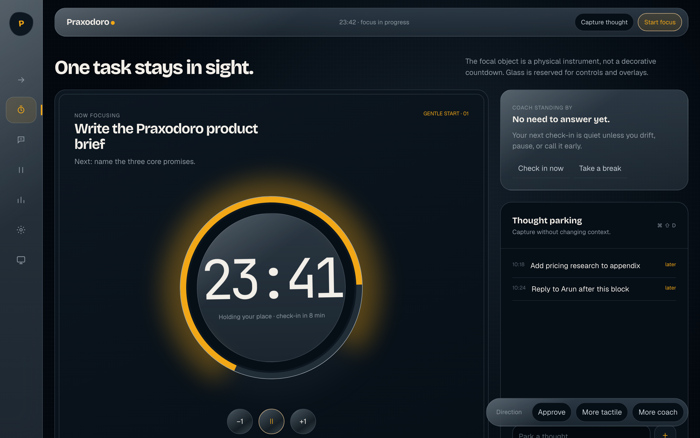
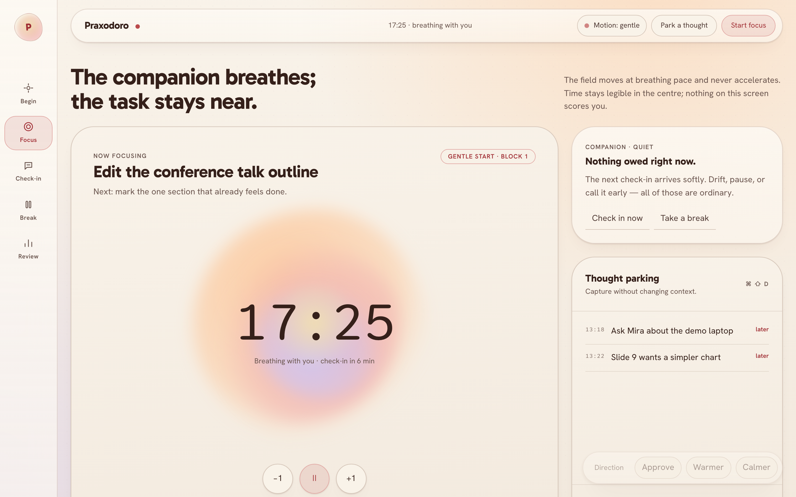
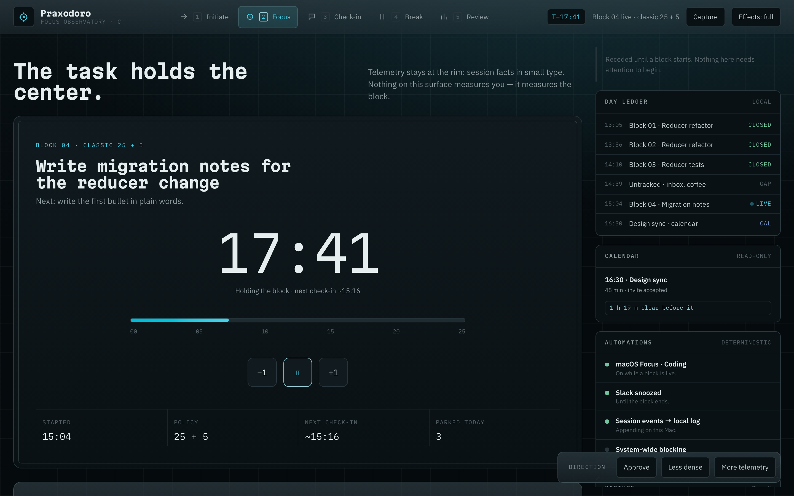
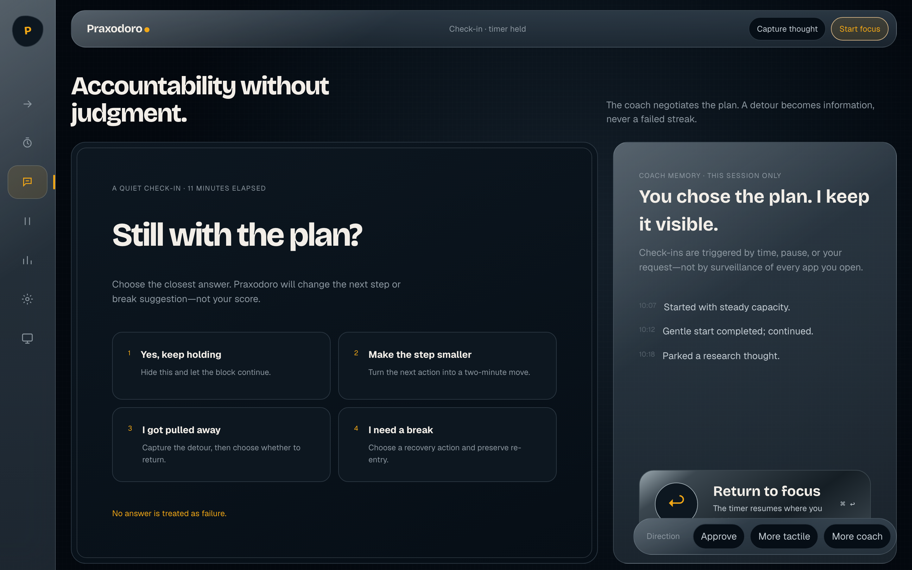
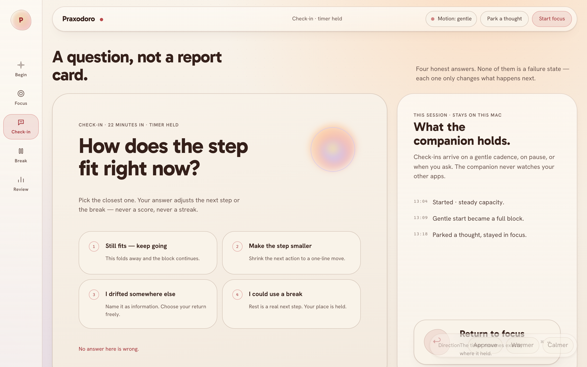
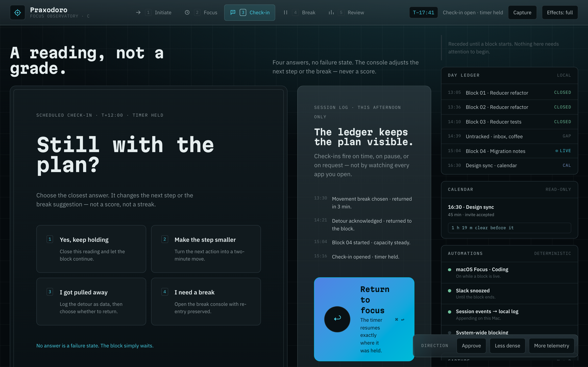
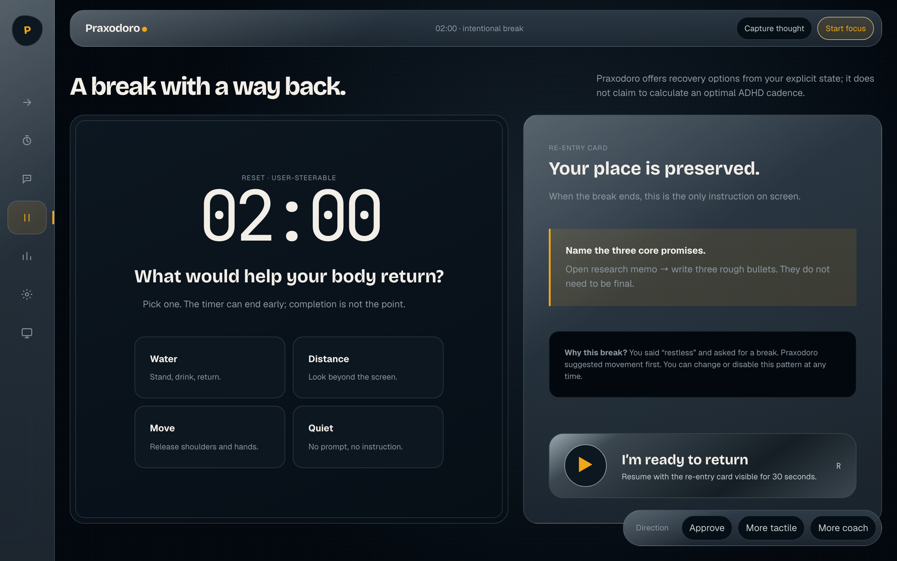
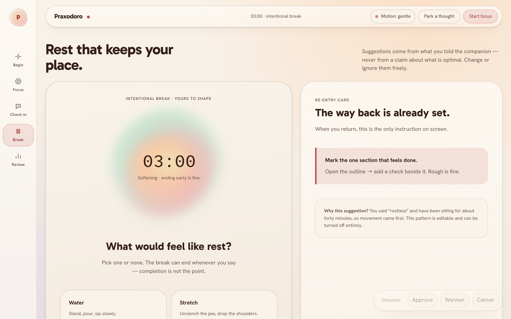
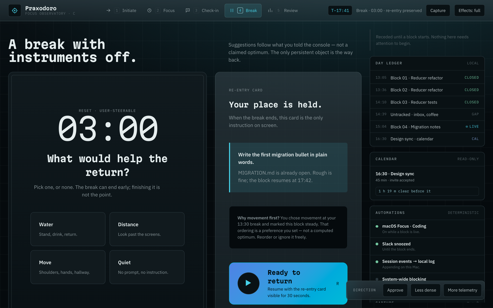
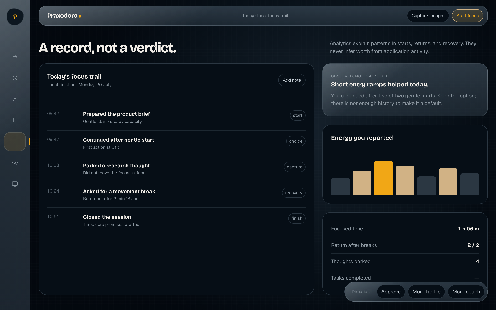
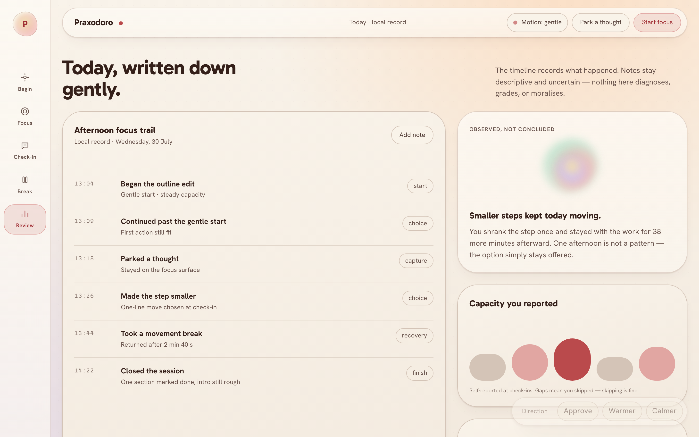
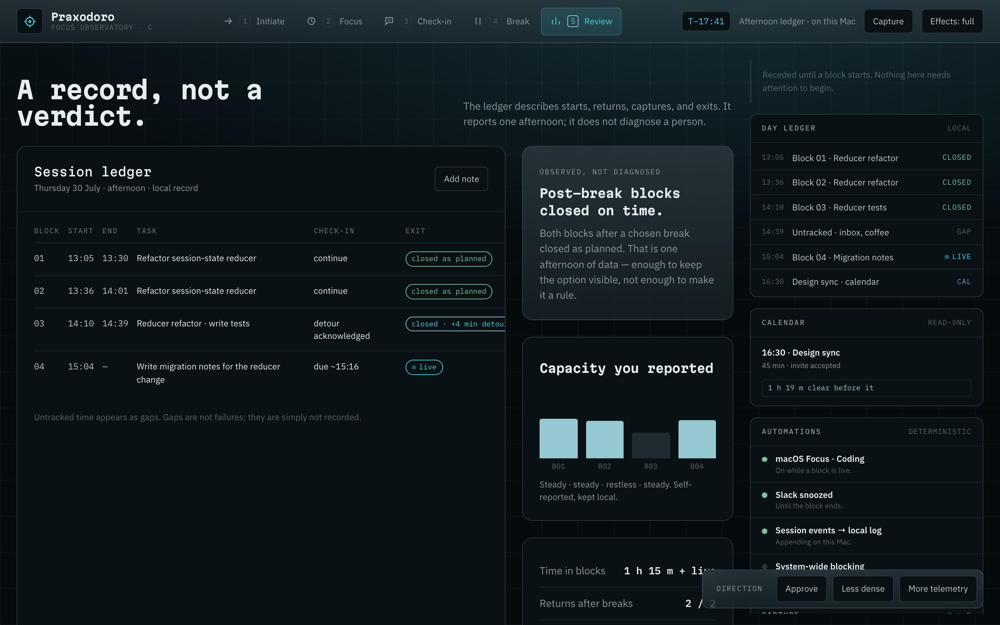